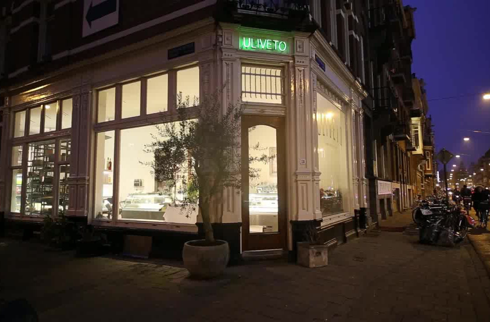
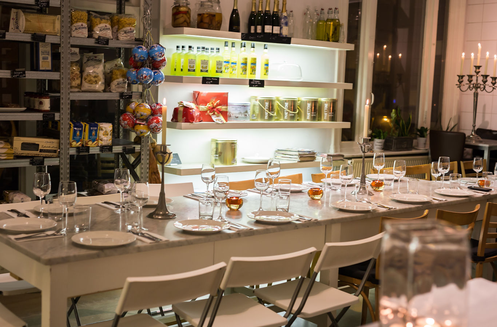
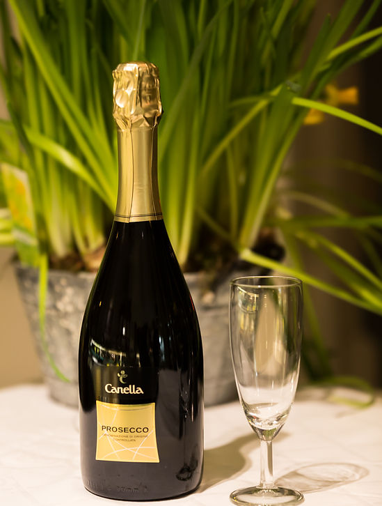
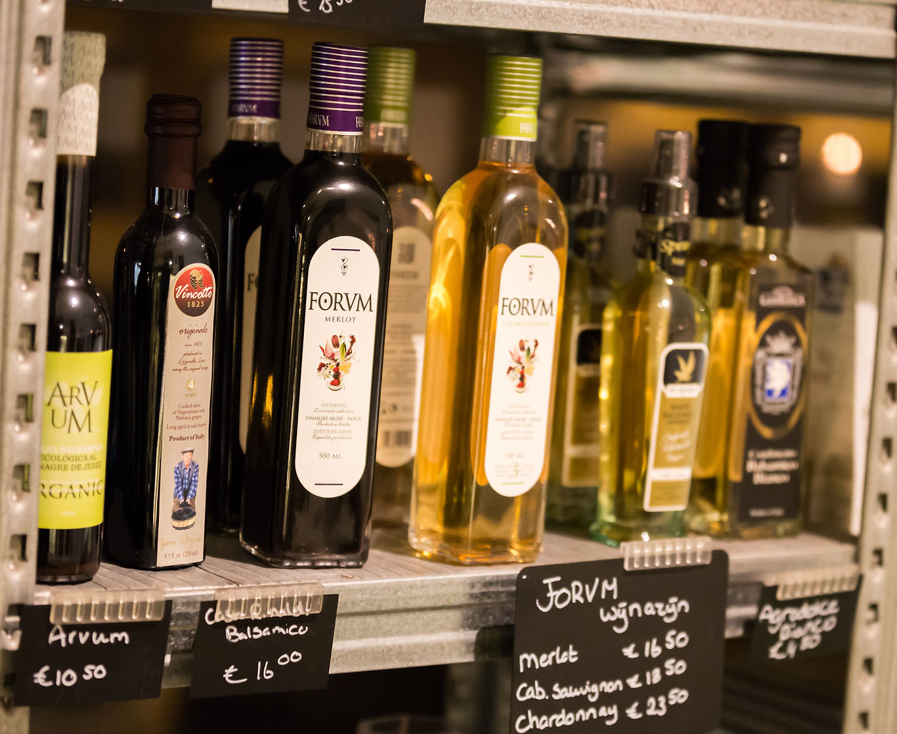
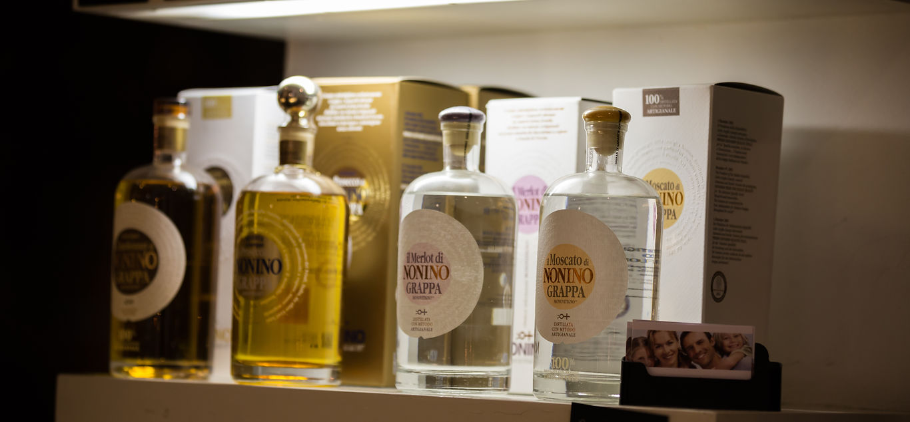

UlivetoFine food to go
Verse Italiaanse en mediterrane gerechten, panini voor de lunch, goede wijn en olijfolie per liter. Op de hoek van de Weteringschans.
Weteringschans 118, Amsterdam
Vers bereid, thuis alleen nog even de oven in
Bij Uliveto kunt u terecht voor de lekkerste Italiaanse en mediterrane gerechten. Onze maaltijden zijn vers bereid en hoeven enkel nog door u thuis de oven of magnetron ingeschoven te worden.
Omdat we het liefst werken met verse ingrediënten die passen bij het seizoen, hebben wij een dagelijks wisselende kaart. Wel kunt u altijd bij ons terecht voor:
- pasta’s
- risotto’s
- vegetarische gerechten
- groentegerechten
- vleesgerechten
- visgerechten
Tijdens de lunch hebben wij heerlijke gerechten, broodjes en koffie. En we beschikken over een grote selectie wijnen.
Wat er vandaag in de vitrine ligt? Loop binnen of bel ons even.

Panini
Onze lunchkaart wisselt ieder half jaar. Alle broodjes zijn ook af te halen.
alle panini
€ 9,50
Vegetarisch panini vegetariani
- Caprese
- Tomaat, mozzarella di bufala & pesto
- Spinazie
- Spinazie, taleggio & pijnboompitten
- Gorgonzola
- Gorgonzola, vijgenjam & walnoten
Met vleeswaren panini con carne
- Prosciutto
- Prosciutto, Parmezaanse kaas & artisjokkentapenade
- Finocchiona
- Finocchiona, provolone & pesto
- Gehaktbrood
- Runder gehaktbrood met tomatenchutney
- Bresaola
- Bresaola, Parmezaanse kaas & truffelmayonaise
- Warm kalfsvlees
- Warm kalfsvlees, gekarameliseerde uien & honingmosterd
Vis & rillettes con pesce e specialità
- Makreel
- Gerookte makreel & ingelegde komkommer
- Rillettes
- Eendenrillettes & cornichons
De broodjeskaart als pdf: Nederlands of English

Vier uw feestje met Uliveto
Uliveto is in te huren voor de catering van uw feestje, diner of bruiloft, tot een maximum van 200 gasten.
Alleen het eten
Handig ingepakt, zodat u het zo de oven of magnetron in kunt schuiven.
Een buffet
Wij verzorgen bijvoorbeeld een buffet op uw grotere feest.
De picknickmand
Bij mooi weer een volledig ingepakte mand, zo mee te nemen naar het nabijgelegen Vondel- of Sarphatipark.
Een compleet arrangement
Naast het eten zorgen wij ook voor de wijn en voor bediening die het eten uitserveert.
Waar u ook voor kiest: heerlijke mediterrane gerechten, bereid met verse ingrediënten van hoge kwaliteit. Kom gerust eens langs in de winkel aan de Weteringschans of bel even voor een afspraak.
De winkel
De gedreven thuiskok kan zijn hart ophalen bij Uliveto.

Olijfolie
Een uitgebreide selectie, te koop per liter of halve liter.
Pasta, bloem & risottorijst
Pasta’s, verschillende soorten bloem om zelf pasta te maken, arborio- en carnaroli-risottorijst.
Truffel, azijn & paddenstoelen
Truffeloliën, diverse azijnen uit onder meer Jerez, Modena en Banyuls, gedroogde porcini en morilles.
Vleeswaren & kazen
Spaanse en Italiaanse vleeswaren zoals prosciutto, salami en bresaola. Ansjovis, mozzarella, Parmezaan en pecorino.
Wijn
Een grote selectie wijnen.

Wat gasten zeggen
Deze plek gaf me het gevoel dat ik in Antwerpen of Parijs was. Mooie locatie en hele mooie pure gerechten. Ik heb hier geluncht, een heerlijk broodje warm kalfsvlees, dat smaakt naar meer! Lekker wijn ook!
Super lekker gegeten. Spaghetti met rode dorade en een tiramisu als toetje. Zeker aanrader!!!
Great location, great food, one of my favourite places to eat in Amsterdam.
Tot uw dienst
Bel ons voor een bestelling, of loop binnen.
| maandag t/m woensdag | 8.30 – 16.00 |
|---|---|
| donderdag & vrijdag | 8.30 – 20.00 |
| zaterdag | 9.30 – 18.00 |
Met een reservering kunnen we de openingstijden verlengen.
Weteringschans 1181017 XT Amsterdam
020 423 0099
info@uliveto.net
Vertel ons over uw evenement
Vertel ons iets meer over uw feest, diner of bruiloft, zodat we kunnen beginnen met de voorbereidingen. Of bel ons meteen.
In English: Uliveto is an Italian and Mediterranean deli and caterer on the Weteringschans. Fresh dishes to take home and reheat, lunch, sandwiches and coffee, wines and olive oil by the litre. Catering for up to 200 guests. Call 020 423 0099 or email info@uliveto.net.